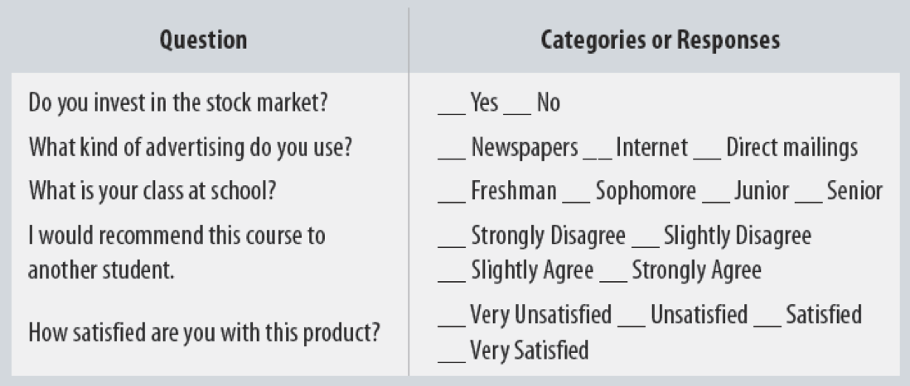
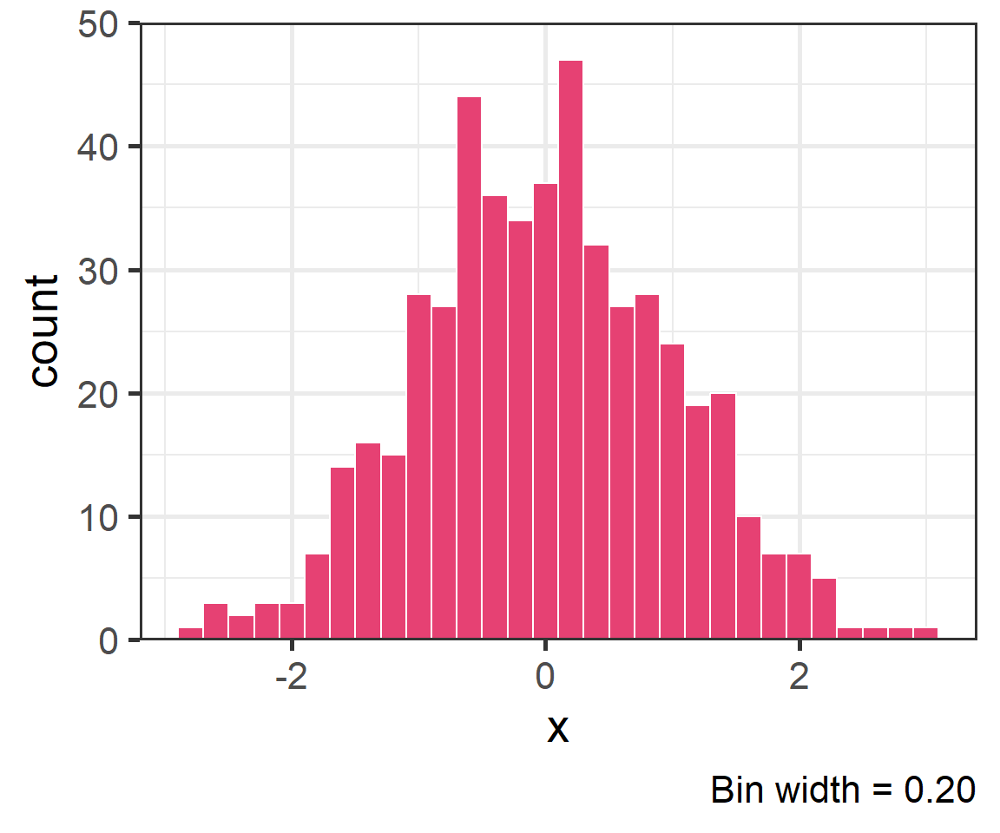
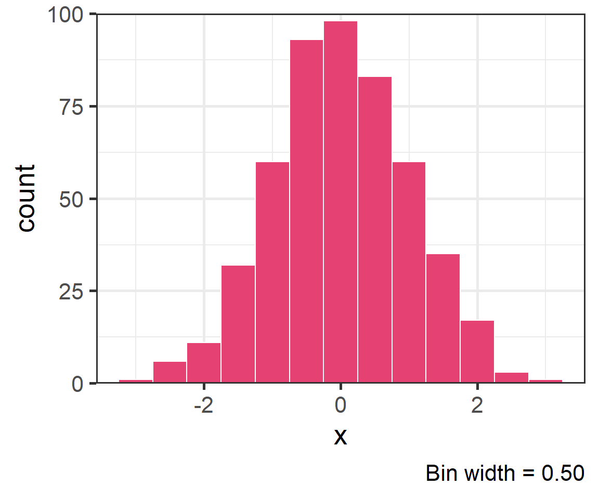
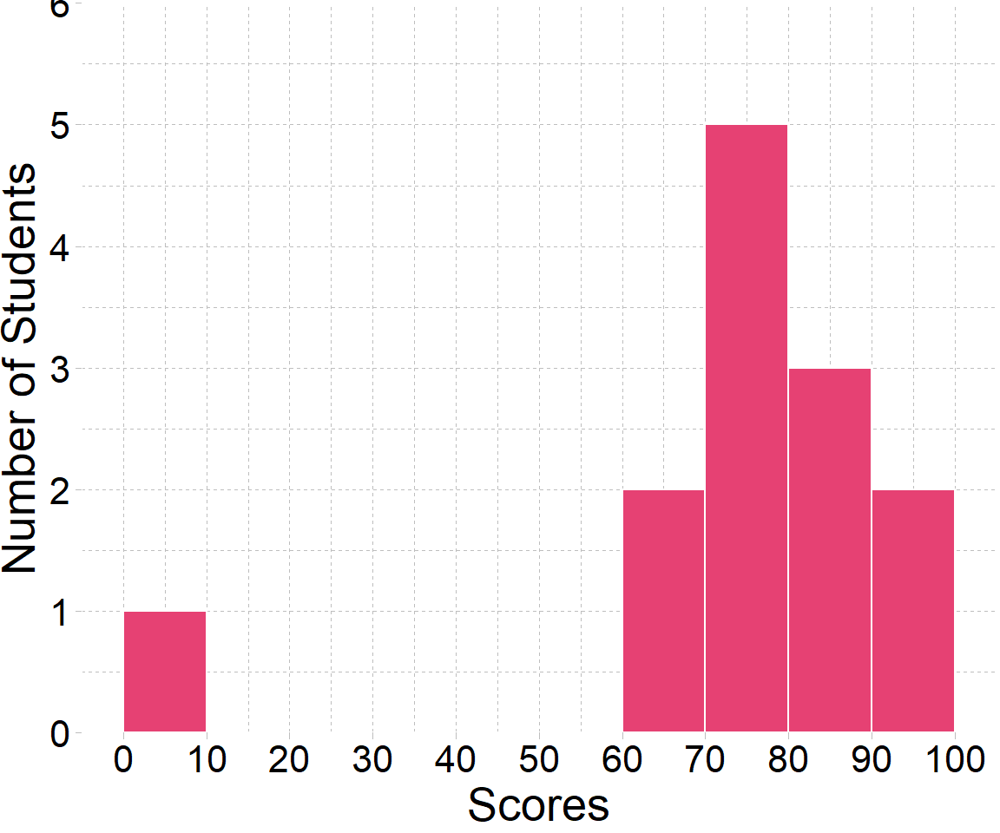
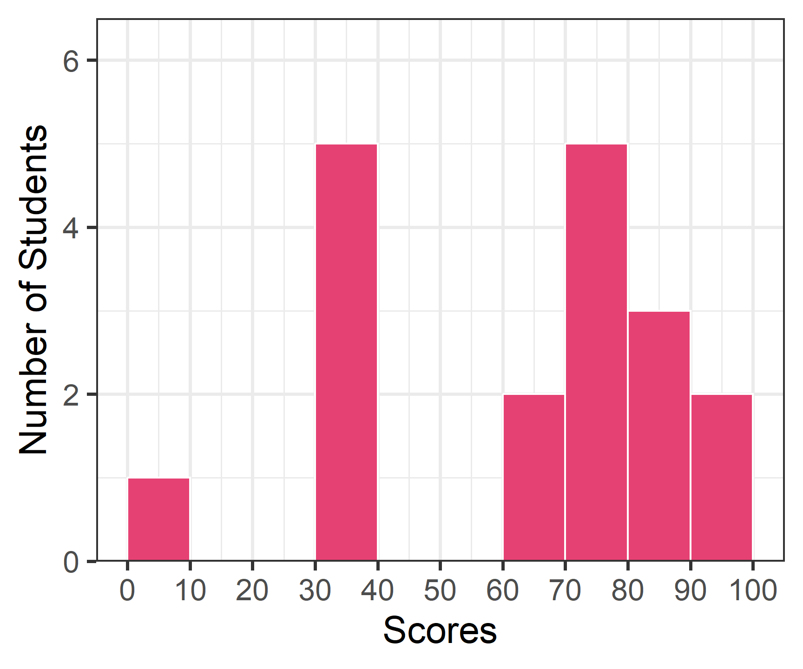
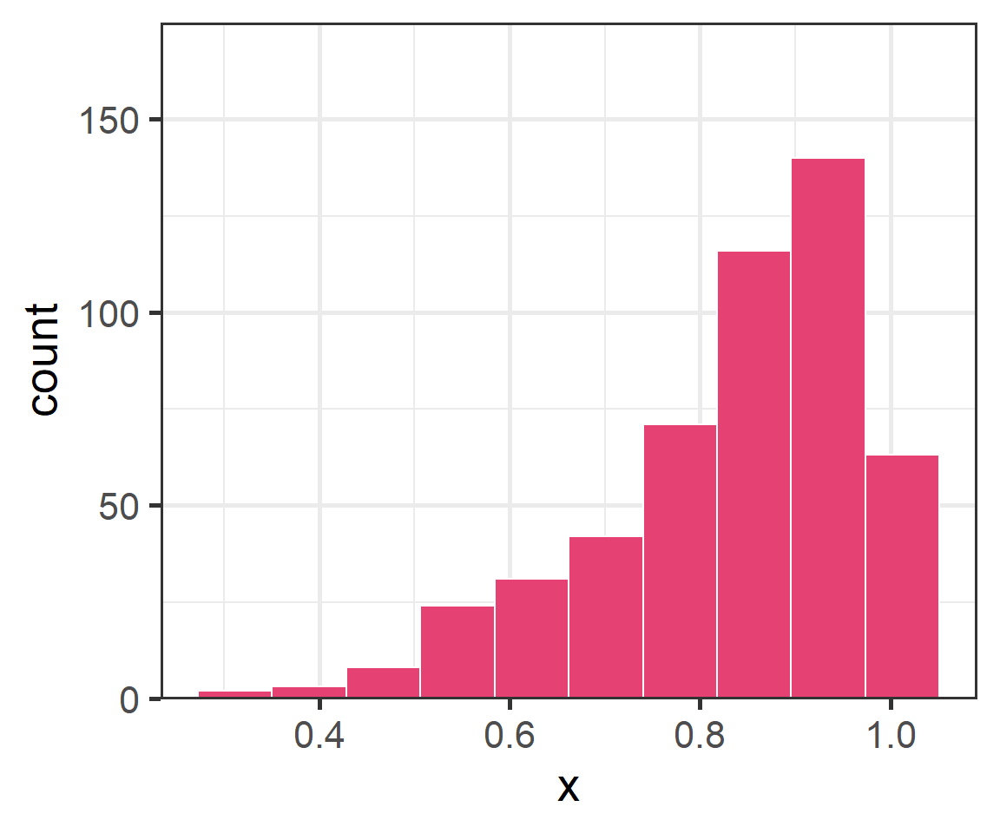
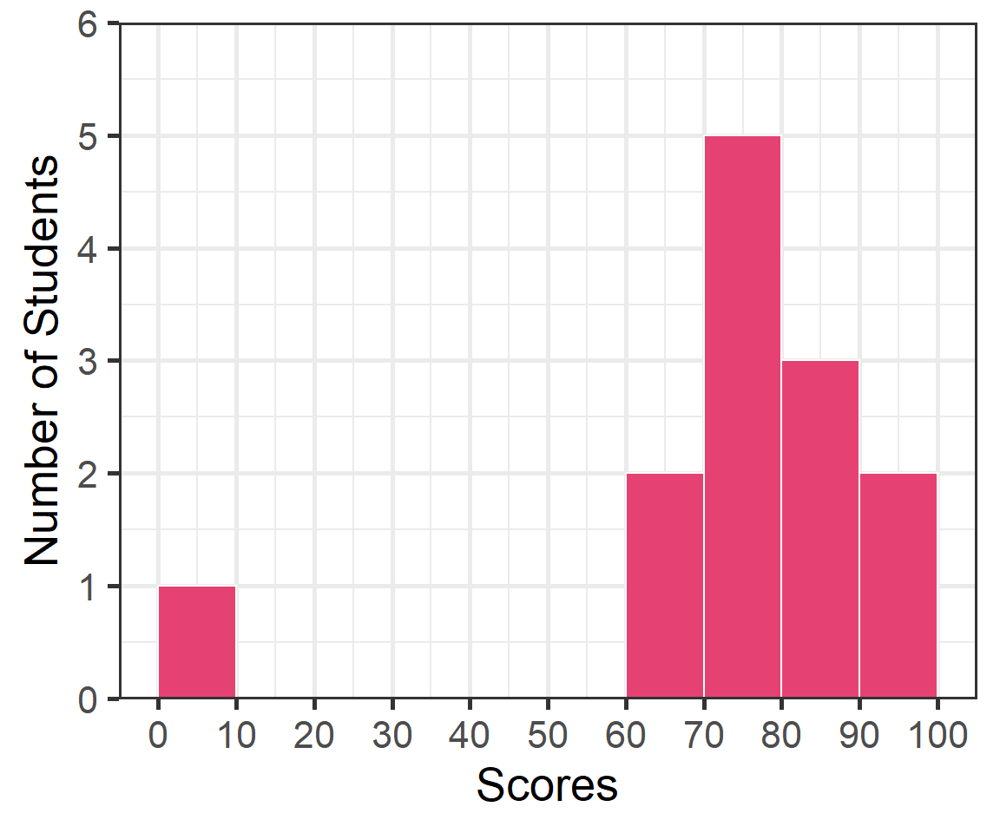

2.1 — Data 101 & Descriptive Statistics
ECON 480 • Econometrics • Fall 2022
Dr. Ryan Safner
Associate Professor of Economics
safner@hood.edu
ryansafner/metricsF22
metricsF22.classes.ryansafner.com
The Two Big Problems with Data
Two Big Problems with Data
- We want to use econometrics to identify causal relationships and make .hi[inferences] about them
Problem for identification: endogeneity
Problem for inference: randomness

Identification Problem: Endogeneity
An independent variable \((X)\) is exogenous if its variation is unrelated to other factors that affect the dependent variable \((Y)\)
An independent variable \((X)\) is endogenous if its variation is related to other factors that affect the dependent variable \((Y)\)
Note: unfortunately this is different from how economists talk about “endogenous” vs. “exogenous” variables in theoretical models…

Identification Problem: Endogeneity
- An independent variable \((X)\) is exogenous if its variation is unrelated to other factors that affect the dependent variable \((Y)\)
Identification Problem: Endogeneity
- An independent variable \((X)\) is endogenous if its variation is related to other factors that affect the dependent variable \((Y)\), e.g. \(Z\)
Inference Problem: Randomness
Data is random due to natural sampling variation
- Taking one sample of a population will yield slightly different information than another sample of the same population
Common in statistics, easy to fix
Inferential Statistics: making claims about a wider population using sample data
- We use common tools and techniques to deal with randomness

The Two Problems: Where We’re Heading…Ultimately
Sample \(\color{#6A5ACD}{\xrightarrow{\text{statistical inference}}}\) Population \(\color{#e64173}{\xrightarrow{\text{causal indentification}}}\) Unobserved Parameters
- We want to identify causal relationships between population variables
- Logically first thing to consider
- Endogeneity problem
- We’ll use sample statistics to infer something about population parameters
- In practice, we’ll only ever have a finite sample distribution of data
- We don’t know the population distribution of data
- Randomness problem
Data 101
Data 101
Data are information with context
Individuals are the entities described by a set of data
- e.g. persons, households, firms, countries
Data 101
- Variables are particular characteristics about an individual
- e.g. age, income, profits, population, GDP, marital status, type of legal institutions
- Observations or cases are the separate individuals described by a collection of variables
- e.g. for one individual, we have their age, sex, income, education, etc.
- e.g. for one individual, we have their age, sex, income, education, etc.
- individuals and observations are not necessarily the same:
- e.g. we can have multiple observations on the same individual over time
Categorical Variables
- Categorical variables place an individual into one of several possible categories
- e.g. sex, season, political party
- may be responses to survey questions
- can be quantitative (e.g. age, zip code)
- In
R:characterorfactortype datafactor\(\implies\) specific possible categories

Categorical Variables: Visualizing I
| cut | n | frequency | percent |
|---|---|---|---|
| Fair | 1610 | 0.0298480 | 2.98 |
| Good | 4906 | 0.0909529 | 9.10 |
| Very Good | 12082 | 0.2239896 | 22.40 |
| Premium | 13791 | 0.2556730 | 25.57 |
| Ideal | 21551 | 0.3995365 | 39.95 |
Good way to represent categorical data is with a frequency table
Count (n): total number of individuals in a category
Frequency: proportion of a category’s occurrence relative to all data
- Multiply proportions by 100% to get percentages
Categorical Variables: Visualizing II
Charts and graphs are always better ways to visualize data
A bar graph represents categories as bars, with lengths proportional to the count or relative frequency of each category

Categorical Data: Pie Charts
Avoid pie charts!
People are not good at judging 2-d differences (angles, area)
People are good at judging 1-d differences (length)
Categorical Data: Alternatives to Pie Charts I
Categorical Data: Alternatives to Pie Charts II
- Try something else: a lollipop chart
diamonds %>%
count(cut) %>%
mutate(cut_name = as.factor(cut)) %>%
ggplot(., aes(x = cut_name, y = n, color = cut))+
geom_point(stat="identity",
fill="black",
size=12) +
geom_segment(aes(x = cut_name, y = 0,
xend = cut_name,
yend = n), size = 2)+
geom_text(aes(label = n),color="white", size=3) +
coord_flip()+
labs(x = "Cut")+
theme_pander(base_family = "Fira Sans Condensed",
base_size=20)+
guides(color = F)Categorical Data: Alternatives to Pie Charts III
Quantitative Data I
- Quantitative variables take on numerical values of equal units that describe an individual
- Units: points, dollars, inches
- Context: GPA, prices, height
- We can mathematically manipulate only quantitative data
- e.g. sum, average, standard deviation
- In
R:numerictype dataintegerif whole numberdoubleif has decimals

Discrete Data
Discrete data are finite, with a countable number of alternatives
Categorical: place data into categories
- e.g. letter grades: A, B, C, D, F
- e.g. class level: freshman, sophomore, junior, senior
Quantitative: integers
- e.g. SAT Score, number of children, age (years)
Continuous Data
- Continuous data are infinitely divisible, with an uncountable number of alternatives
- e.g. weight, length, temperature, GPA
- Many discrete variables may be treated as if they are continuous
- e.g. SAT scores (whole points), wages (dollars and cents)

Spreadsheets
| id | name | age | sex | income |
|---|---|---|---|---|
| 1 | John | 23 | Male | 41000 |
| 2 | Emile | 18 | Male | 52600 |
| 3 | Natalya | 28 | Female | 48000 |
| 4 | Lakisha | 31 | Female | 60200 |
| 5 | Cheng | 36 | Male | 81900 |
The most common data structure we use is a spreadsheet
- In R: a
data.frameortibble
- In R: a
A row contains data about all variables for a single individual
A column contains data about a single variable across all individuals
Spreadsheets: Indexing
| id | name | age | sex | income |
|---|---|---|---|---|
| 1 | John | 23 | Male | 41000 |
| 2 | Emile | 18 | Male | 52600 |
| 3 | Natalya | 28 | Female | 48000 |
| 4 | Lakisha | 31 | Female | 60200 |
| 5 | Cheng | 36 | Male | 81900 |
Spreadsheets: Notation
It is common to use some notation like the following:
Let \(\{x_1, x_2, \cdots, x_n\}\) be a simple data series on variable \(X\)
- \(n\) individual observations
- \(x_i\) is the value of the \(i\)th observation for \(i=1,2,\cdots, n\)
Quick Check
Let \(x\) represent the score on a homework assignment:
\[75, 100, 92, 87, 79, 0, 95\]
- What is \(n\)?
- What is \(x_1\)?
- What is \(x_6\)?
Datasets: Cross-Sectional
| id | name | age | sex | income |
|---|---|---|---|---|
| 1 | John | 23 | Male | 41000 |
| 2 | Emile | 18 | Male | 52600 |
| 3 | Natalya | 28 | Female | 48000 |
| 4 | Lakisha | 31 | Female | 60200 |
| 5 | Cheng | 36 | Male | 81900 |
Cross-sectional data: observations of individuals at a given point in time
Each observation is a unique individual
\[x_i\]
Simplest and most common data
A “snapshot” to compare differences across individuals
Datasets: Time-Series
| Year | GDP | Unemployment | CPI |
|---|---|---|---|
| 1950 | 8.2 | 0.06 | 100 |
| 1960 | 9.9 | 0.04 | 118 |
| 1970 | 10.2 | 0.08 | 130 |
| 1980 | 12.4 | 0.08 | 190 |
| 1985 | 13.6 | 0.06 | 196 |
Time-series data: observations of the same individual(s) over time
Each observation is a time period
\[x_{t}\]
Often used for macroeconomics, finance, and forecasting
Unique challenges for time series
A “moving picture” to see how individuals change over time
Datasets: Panel
| City | Year | Murders | Population | UR |
|---|---|---|---|---|
| Philadelphia | 1986 | 5 | 3.700 | 8.7 |
| Philadelphia | 1990 | 8 | 4.200 | 7.2 |
| D.C. | 1986 | 2 | 0.250 | 5.4 |
| D.C. | 1990 | 10 | 0.275 | 5.5 |
| New York | 1986 | 3 | 6.400 | 9.6 |
- Panel, or longitudinal dataset: a time-series for each cross-sectional entity
- Must be same individuals over time
- Each obs. is an individual in a time period
\[x_{it}\]
More common today for serious researchers; unique challenges and benefits
A combination of “snapshot” comparisons over time
Descriptive Statistics
Variables and Distributions
Variables take on different values, we can describe a variable’s .hi[distribution] (of these values)
We want to visualize and analyze distributions to search for meaningful patterns using statistics
Two Branches of Statistics
- Two main branches of statistics:
Descriptive Statistics: describes or summarizes the properties of a sample
Inferential Statistics: infers properties about a larger population from the properties of a sample1

Histogram
- A common way to present a quantitative variable’s distribution is a histogram
- The quantitative analog to the bar graph for a categorical variable
- Divide up values into bins of a certain size, and count the number of values falling within each bin, representing them visually as bars

Histogram: Bin Size
- A common way to present a quantitative variable’s distribution is a histogram
- The quantitative analog to the bar graph for a categorical variable
- Divide up values into bins of a certain size, and count the number of values falling within each bin, representing them visually as bars
- Changing the bin-width will affect the bars

Histogram: Example
Example
A class of 13 students takes a quiz (out of 100 points) with the following results:
\[\{ 0, 62, 66, 71, 71, 74, 76, 79, 83, 86, 88, 93, 95 \}\]
Histogram: Example
Example
A class of 13 students takes a quiz (out of 100 points) with the following results:
\[\{ 0, 62, 66, 71, 71, 74, 76, 79, 83, 86, 88, 93, 95 \}\]
ggplot(quizzes,aes(x=scores))+
geom_histogram(breaks = seq(0,100,10),
color = "white",
fill = "#e64173")+
scale_x_continuous(breaks = seq(0,100,10))+
scale_y_continuous(limits = c(0,6), expand = c(0,0))+
labs(x = "Scores",
y = "Number of Students")+
theme_bw(base_family = "Fira Sans Condensed",
base_size=20)
Descriptive Statistics
- We are often interested in the shape or pattern of a distribution, particularly:
- Measures of center
- Measures of dispersion
- Shape of distribution
Measures of Center
Mode
The .himode of a variable is simply its most frequent value
A variable can have multiple modes
Example
A class of 13 students takes a quiz (out of 100 points) with the following results:
\[\{ 0, 62, 66, \mathbf{71}, \mathbf{71}, 74, 76, 79, 83, 86, 88, 93, 95 \}\]
Mode
There is no dedicated
mode()function inR, surprisinglyA workaround in
dplyr:
Multi-Modal Distributions
- Looking at a histogram, the modes are the “peaks” of the distribution
- Note: depends on how wide you make the bins!
- May be unimodal, bimodal, trimodal, etc

Symmetry and Skew I
A distribution is symmetric if it looks roughly the same on either side of the “center”
The thinner ends (far left and far right) are called the tails of a distribution
Symmetry and Skew I
- If one tail stretches farther than the other, distribution is skewed in the direction of the longer tail
- In this example, skewed to the left

Outliers
Outlier: “extreme” value that does not appear part of the general pattern of a distribution
Can strongly affect descriptive statistics
Might be the most informative part of the data
Could be the result of errors
Should always be explored and discussed!

Arithmetic Mean (Population)
- The natural measure of the center of a population’s distribution is its “average” or arithmetic mean \(\mu\)
\[\mu=\frac{x_1+x_2+...+x_N}{N} = \frac{1}{N} \sum^N_{i=1} x_i\]
For \(N\) values of variable \(x\), “mu” is the sum of all individual \(x\) values \((x_i)\) from 1 to \(N\), divided by the \(N\) number of values1
See today’s appendix for more about the summation operator, \(\displaystyle\sum\), it’ll come up again!
Arithmetic Mean (Sample)
- When we have a sample, we compute the sample mean \(\bar{x}\)
\[\bar{x}=\frac{x_1+x_2+...+x_n}{n} = \frac{1}{n} \sum^n_{i=1} x_i\]
- For \(n\) values of variable \(x\), “x-bar” is the sum of all individual \(x\) values \((x_i)\) divided by the \(n\) number of values
Arithmetic Mean (Sample)
Example
\[\{0, 62, 66, 71, 71, 74, 76, 79, 83, 86, 88, 93, 95\}\]
\[\begin{align*} \bar{x}&=\frac{1}{13}(0+62+66+71+71+74+76+79+83+86+88+93+95)\\ \bar{x}&=\frac{944}{13}\\ \bar{x}&=72.62\\ \end{align*}\]
Arithmetic Mean: Affected by Outliers
- If we drop the outlier (0)
Example
\[\{62, 66, 71, 71, 74, 76, 79, 83, 86, 88, 93, 95\}\]
\[\begin{align*} \bar{x}&=\frac{1}{12}(62+66+71+71+74+76+79+83+86+88+93+95)\\ &=\frac{944}{12}\\ &=78.67\\ \end{align*}\]
Median
\[\{0, 62, 66, 71, 71, 74, \mathbf{76}, 79, 83, 86, 88, 93, 95\}\]
- The median is the midpoint of the distribution
- 50% to the left of the median, 50% to the right of the median
- Arrange values in numerical order
- For odd \(n\): median is middle observation
- For even \(n\): median is average of two middle observations
Mean, Median, and Outliers

Mean, Median, Symmetry, & Skew I
Mean, Median, Symmetry, & Skew II
Mean, Median, Symmetry, & Skew III
Measures of Dispersion
Range
The more variation in the data, the less helpful a measure of central tendency will tell us
Beyond just the center, we also want to measure the spread
Simplest metric is range \(=max-min\)
Five Number Summary I
- Common set of summary statistics of a distribution: “five number summary”:
- Minimum value
- 25th percentile \((Q_1\), median of first 50% of data)
- 50th percentile (median, \(Q_2)\)
- 25th percentile \((Q_3\), median of last 50% of data)
- Maximum value
Min. 1st Qu. Median Mean 3rd Qu. Max.
0.00 71.00 76.00 72.62 86.00 95.00 Five Number Summary II
- The \(n\)th percentile of a distribution is the value that places \(n\) percent of values beneath it
Boxplot I
Boxplots are a great way to visualize the 5 number summary
Height of box: \(Q_1\) to \(Q_3\) (known as interquartile range (IQR), middle 50% of data)
Line inside box: median (50th percentile)
“Whiskers” identify data within \(1.5 \times IQR\)
Points beyond whiskers are outliers
- common definition: Outlier \(>1.5 \times IQR\)
Boxplot Comparisons I
- Boxplots (and five number summaries) are great for comparing two distributions
Example
\[\begin{align*} \text{Quiz 1}&: \{0, 62, 66, 71, 71, 74, 76, 79, 83, 86, 88, 93, 95\} \\ \text{Quiz 2}&: \{50, 62, 72, 73, 79, 81, 82, 82, 86, 90, 94, 98, 99\} \\ \end{align*}\]
Boxplot Comparisons II
Aside: Making Nice Summary Tables I
I don’t like the options available for printing out summary statistics
So I wrote my own
R functioncalledsummary_table()that makes nice summary tables (it usesdplyrandtidyr!). To use:
Download the
summaries.Rfile from the website1 and move it to your working directory/project folderLoad the function with the
source()command:2
Aside: Making Nice Summary Tables II
- The function has at least 2 arguments: the
data.frame(automatically piped in if you use the pipe!) and then all variables you want to summarize, separated by commas1
Aside: Making Nice Summary Tables III
- When
rendered inQuarto, it looks nicer:
| Variable | Obs | Min | Q1 | Median | Q3 | Max | Mean | Std. Dev. |
|---|---|---|---|---|---|---|---|---|
| cty | 234 | 9 | 14 | 17 | 19 | 35 | 16.86 | 4.26 |
| cyl | 234 | 4 | 4 | 6 | 8 | 8 | 5.89 | 1.61 |
| hwy | 234 | 12 | 18 | 24 | 27 | 44 | 23.44 | 5.95 |
Measures of Dispersion: Deviations
- Every observation \(i\) deviates from the mean of the data:
\[deviation_i = x_i-\mu \]
There are as many deviations as there are data points \((n)\)
We can measure the average or standard deviation of a variable from its mean
Before we get there…
Variance (Population)
- The population variance \(\sigma^2)\) of a population distribution measures the average of the squared deviations from the population mean \((\mu)\)
\[\sigma^2 = \frac{1}{N}\displaystyle\sum^N_{i=1} (x_i-\mu)^2\]
- Why do we square deviations?
- What are these units?
Standard Deviation (Population)
- Square root the variance to get the population standard deviation \(\sigma\), the average deviation from the population mean (in same units as \(x\))
\[\sigma=\sqrt{\sigma^2}=\sqrt{\frac{1}{N}\displaystyle\sum^N_{i=1} (x_i-\mu)^2 }\]
Variance (Sample)
- The sample variance \(s^2\) of a sample distribution measures the average of the squared deviations from the sample mean \((\bar{x})\)
\[\sigma^2 = \frac{1}{n-1}\displaystyle\sum^n_{i=1} (x_i-\bar{x})^2\]
- Why do we divide by \(n-1\)?
Standard Deviation (Sample)
- Square root the sample variance to get the sample standard deviation \(s\), the average deviation from the sample mean (in same units as \(x\))
\[s=\sqrt{s^2}=\sqrt{\frac{1}{n-1}\displaystyle\sum^n_{i=1} (x_i-\bar{x})^2 }\]
Sample Standard Deviation: Example
Example
Calculate the sample standard deviation for the following series:
\[\{2, 4, 6, 8, 10 \}\]
The Steps to Calculate sd(), Coded I
# A tibble: 1 × 1
`mean(x)`
<dbl>
1 6The Steps to Calculate sd(), Coded II
The Steps to Calculate sd(), Coded III
Sample Standard Deviation: You Try
Example
Calculate the sample standard deviation for the following series:
\[\{1, 3, 5, 7 \}\]
Descriptive Statistics: Populations vs. Samples
Population parameters
Population size: \(N\)
Mean: \(\mu\)
Variance: \(\sigma^2=\frac{1}{N} \displaystyle\sum^N_{i=1} (x_i-\mu)^2\)
Standard deviation: \(\sigma = \sqrt{\sigma^2}\)
Sample statistics
Population size: \(n\)
Mean: \(\bar{x}\)
Variance: \(s^2=\frac{1}{n-1} \displaystyle\sum^n_{i=1} (x_i-\bar{x})^2\)
Standard deviation: \(s = \sqrt{s^2}\)